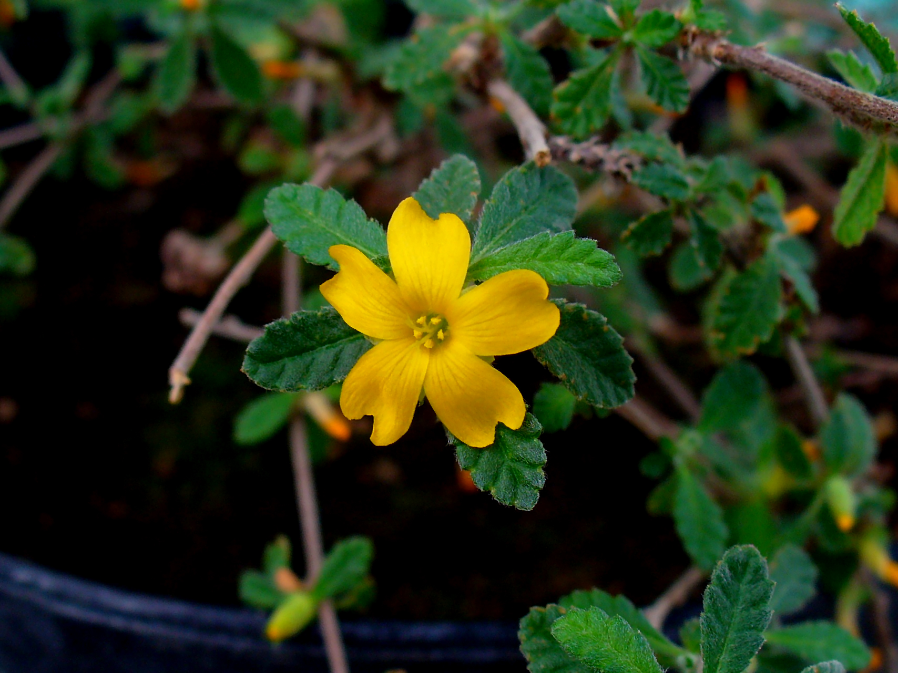

Turnera diffusa
common name: damiana
en español: damiana
plant family: Passifloraceae (passionflower)
parts used: dried aerial parts  from Wikimedia Commons by H. Zell - Own work, CC BY-SA 3.0
observations/description
dried leaves
- sage green leaf, slightly brownish, slightly orangish; a bit fluffier than dried Lamiaceae leaves but similar in appearance
- complex aroma, a bit lemony/orangy, something of incense/myrrh; an arcane quality
"Turnera diffusa", Wikipedia
- relatively small, woody shrub that produces small, aromatic flowers
- blossoms in early to late summer, followed by fruits that taste similar to figs
distribution/conservation status
"Turnera diffusa", Wikipedia
- native to southern Texas in the United States, Mexico, Central America, South America, and the Caribbean
primary actions
The Yoga of Herbs, p. 200
- stimulant, aphrodisiac
The Modern Herbal Dispensatory, p. 221
- antidepressant, aphrodisiac, nervine, metabolic stimulant
system affinities
reproductive, nervous
primary uses
The Modern Herbal Dispensatory, p. 221
- commonly used to increase libido
- tonic for stress and low energy
- works best when low sex drive is due to fatigue and stress
The New Age Herbalist, p. 116-7
- stimulating nerve tonic used for debility, depression, and lethargy but commonly used as a sex tonic
- mild laxative properties
Spiritual Herbalism, p. 112
- warm, spicy, aromatic herb with history of use as a sexual tonic
- nervine and hormonal balancer, which enables sexual tonic property
- in a tea or bath before bed or under pillow to support dreamwork
- centers and grounds, has a life-enhancing effect on the body and mind
- for low libido, hot flashes, sexual exhaustion/weakness, vaginal dryness, anxiety, and depression
energetics
The Yoga of Herbs, p. 200
- reduces kapha; vāta neutral; increases pitta
- pungent/bitter taste - pungent post-digestive effect
- heating
The Modern Herbal Dispensatory, p. 221
- warming
pharmacology
The New Age Herbalist, p. 116-7
- volatile oil (up to 1%)
- alpha and beta pinene, cineole, thymol, cymene, alpha copaene, beta cadinene, calamenene, beta sitasterol
- cyanogenic glycoside, damianin (bitter amorphous substance), resins, gum
contraindications/pharmaceutical interactions/warnings
The Modern Herbal Dispensatory, p. 221
- avoid during pregnancy
The New Age Herbalist, p. 116-7
- excessive use can cause insomnia and headaches
Spiritual Herbalism, p. 112
- avoid during pregnancy or with excess inflammatory conditions
- long-term use can interfere with iron absorption
preparations
- tisane
- macerate
- tincture
- glycerite
- powder
dosage
The Modern Herbal Dispensatory, p. 221
- infusion: 8 oz, up to 3/day
- tincture: 1-2 mL, up to 4/day
- glycerite: 1-3 mL, up to 4/day
- powder: 1000-2000 mg, 2-3/day
extra information
The New Age Herbalist, p. 116-7
- the Latin variant is Turnera aphrodisiaca, indicating its most common use
Spiritual Herbalism, p. 112
- in Latin America, damiana is ranked second only to chocolate as an aphrodisiac
"Turnera diffusa", Wikipedia
- damiana is an ingredient in a traditional Mexican liqueur, which is sometimes used in lieu of triple sec in margaritas; Mexican folklore claims that it was used in the 'original' margarita
personal experiences/simples
tisane (1.5 tsp: 12 oz, 10 minutes), dried leaf
- strong fragrance upon pouring the hot water; more incense, even sharper though, almost sherbet, or the citric acid in chalky candy, or pine; resinous
- very pale greenish yellow hue
- light body, very flavorful but very high notes, similar to the aroma, undergirded with what feels like acidity
- further sips taste deeper/more body, then less; a slippery/mercurial property
- i believe i have smelled this many, many times growing up, perhaps in perfume
- reminds me of my grandmother
- something building in the heart space, starting to radiate outwards towards arms/downwards lower abdomen
macerate (1 tbsp: 16 oz, 11 hours), dried leaf
- stronger, clearer flavor; i believe this herb wants a cold infusion/maceration
- effect is quite relaxing, but not sedating; relaxation that helps me access a carefree freedom
- feeling a little stimulant action as well, similar to the onset of getting high
- would pair well with either a stronger stimulant for the aphrodisiac quality or a stronger sedative for sleep/dreaming
- or with a gentle stimulant and a gentle sedative (probably both Lamiaceae) for insight/yoga/meditation
witchcraft
Spiritual Herbalism, p. 112
- brings warmth to frigid and cold libido
- excellent for disconnection from sexual pleasure due to trauma
- encourages wholeness and warmth in the lower cakras and sexual organs
- encourages watery, lucid, visionary dreams
- use to dream about a future lover
- infusions and spells for lust
- planetary influences: mars, fire
recipes
sources
Easely, Thomas and Steven Horne. The Modern Herbal Dispensatory (2016)
Frawley, David and Vasant Lad. The Yoga of Herbs: An Ayurvedic Guide to Herbal Medicine (1986)
Goldberg Blackthorn, Samantha. Ace of Cups Herbal Medicine and Botanical Magic Herbal School (2024)
Mabey, Richard et al. The New Age Herbalist (1988)
Rose, Karen M. The Art & Practice of Spiritual Herbalism (2022)
"Turnera diffusa" on Wikipedia. Retrieved 8 May 2025.